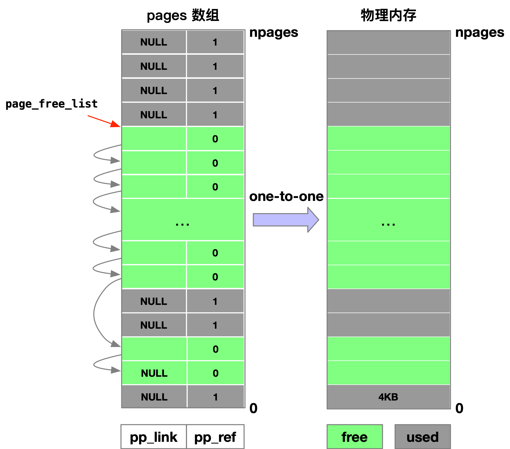
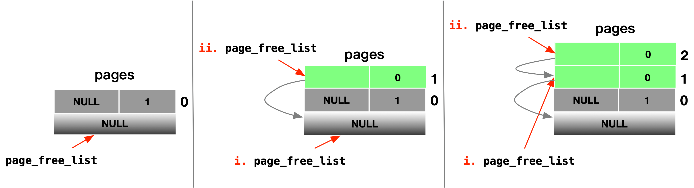
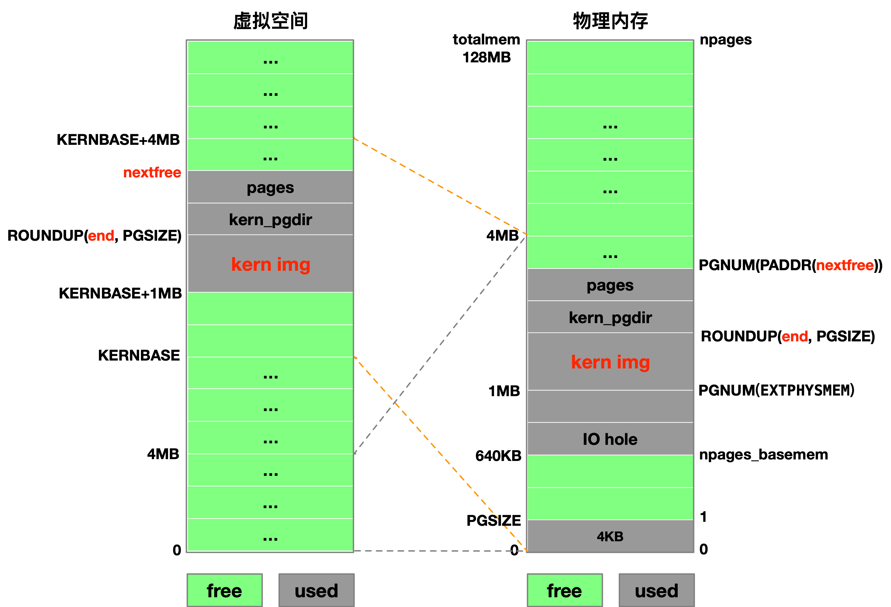
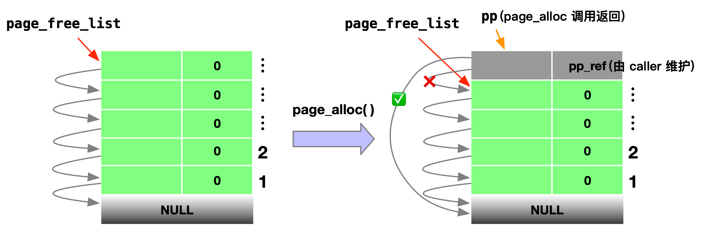
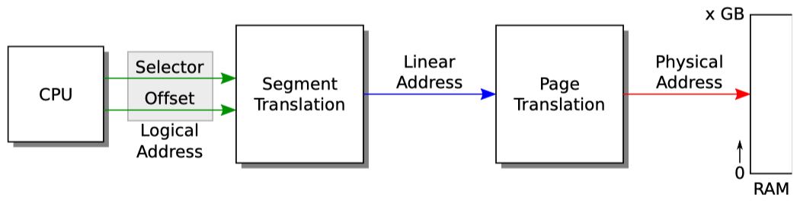
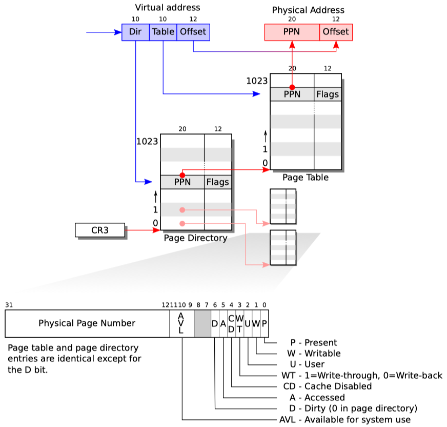

重学操作系统系列，MIT 6.828 课程实验
Table of contents
In fact, in the next lab, we will map the entire bottom 256MB of the PC’s physical address space, from physical addresses 0x00000000 through 0x0fffffff, to virtual addresses 0xf0000000 through 0xffffffff respectively. You should now see why JOS can only use the first 256MB of physical memory.
- 【实验二于2019年4月11日开始，于4月13日完成 Part 1，初稿报告完成于4月xx日】
- 【从学校毕业，正式参加工作后，就没有再看这部分内容了，现在重新拾起，2019年11月3日】
- 【11月29日晚上和12月30日 做完lab2】
内存管理（Memory management）主要包含两个部分：
- 1）
kernel的物理内存分配器（a physical memory allocator for the kernel），使用 4KB 的页大小，需要使用数据结构来记录哪些物理页面已被分配、哪些处于空闲，对于已分配的物理页面，记录该页面被多少个进程所共享； - 2）虚拟内存（virtual memory），将内核和用户程序使用的虚拟地址映射为物理地址。当指令执行时，x86 的硬件 MMU（内存管理单元）会进行虚拟地址向物理地址的映射。
与实验相关的源代码文件：
inc/mmu.h：包含一些定义，需要好好看看inc/memlayout.h：虚拟地址空间的布局，PageInfo structkern/pmap.h[.c]：物理内存管理，读取 CMOS RAM 得到物理内存的大小（这部分代已经实现了，我们不需要关心 CMOS 工作的具体细节【透明与抽象】）kern/kclock.h[.c]：manipulate the PC’s battery-backed clock and CMOS RAM hardware, in which the BIOS records the amout of physical memory the PC contains
Part 1: Physical Page Management
操作系统需要维护好哪些物理内存单元是空闲的，哪些是正在被使用的。实验中，我们以页（page，4KB）为基本单位进行物理内存管理，因此可以使用 MMU 来完成地址映射并且为已分配的内存添加保护机制。
实现物理内存（以页为基本单位）分配器，记录哪些页面是空闲的，使用一个链表来完成（链表节点表示 struct PageInfo 对象，其对应一个真实的物理内存页面）。
Exercise 1：实现
kern/pmap.c中的函数boot_alloc()、men_init()、page_init()、page_alloc()、page_free()，使用check_page_free_list()和check_page_alloc()检查物理内存分配器的实现是否正确。Hint：添加assert()使用防御式编程，判断假设是否正确
查看源文件，注意以下全局变量：
// These variables are set by i386_detect_memory()
size_t npages; // Amount of physical memory (in pages)
static size_t npages_basemem; // Amount of base memory (in pages)
// These variables are set in mem_init()
pde_t *kern_pgdir; // Kernel's initial page directory
struct PageInfo *pages; // Physical page state array
static struct PageInfo *page_free_list; // Free list of physical pages
在 Part 1 中重点关注：
npages：物理内存的总帧数，以页大小为单位（PGSIZE= 4096，4KB）。在 JOS 内核中维护了每个物理帧的空闲状态，每个物理帧对应一个struct PageInfo对象；pages：表示物理内存的空闲状态（“占用”，“空闲”）的数组，数组的每一项对应物理内存中的一个PGSIZE大小的物理帧，因此数组总共有npages项；page_free_list：全部的物理内存可以表示为npages个物理页帧（页帧大小为 4KB），每个物理页帧在内核的数据结构pages中对应数组的一项（one-to-one mapping），为struct PageInfo对象。在系统运行的过程中，执行程序、存储数据需要使用物理内存，对应的物理页帧的状态就会由之前的“空闲”变为“占用”。将所有空闲页帧对应的struct PageInfo对象串联为空闲链表，使用page_free_list表示链表头，每次要申请物理内存时就将当前page_free_list指向的struct PageInfo对象所对应的物理页帧给分配出去，并且将其从空闲链表移出，page_free_list链表头向后移动。
/*
* Each struct PageInfo stores metadata for one physical page.
* Is it NOT the physical page itself, but there is a one-to-one
* correspondence between physical pages and struct PageInfo's.
* You can map a struct PageInfo * to the corresponding physical address
* with page2pa() in kern/pmap.h.
*/
struct PageInfo {
// Next page on the free list.
struct PageInfo *pp_link;
// pp_ref is the count of pointers (usually in page table entries)
// to this page, for pages allocated using page_alloc.
// Pages allocated at boot time using pmap.c's
// boot_alloc do not have valid reference count fields.
uint16_t pp_ref;
};
如下示意图，灰色表示正被使用的物理内存，在内核数据结构 pages 中，正在被使用的物理页帧对应的数组项 pp_link 为 NULL，pp_ref 为 1（初始化为 1，记录对应物理页帧被引用的次数）。绿色表示空闲物理内存，在内核数据结构 pages 中，空闲物理页帧对应的数组项 pp_ref 为 0；各空闲物理页帧对应在 pages 数组中的项串联成单向链表，page_free_list 指向链表头，链表的最后一项 pp_link 为 NULL（用于判断空闲链表是否为空，out of free memory）。在下面的 page_init() 函数中会更细致地说明空闲链表的建立过程。

由 Lab1 Part 3 中分析得到，在 JOS 内核映像被加载进入内存之后，系统便立即跳转开始执行 kern/entry.S 的代码，开启页机制，设置好函数调用栈就开始执行 C 程序代码，即 kern/init.c 中的 i386_init() 函数。在 i386_init() 中调用 mem_init()，首先创建初始化时内核的数据结构：
- 分配物理内存，创建初始化的 page directory 并设置访问权限
// create initial page directory.
kern_pgdir = (pde_t *) boot_alloc(PGSIZE);
memset(kern_pgdir, 0, PGSIZE);
// Permissions: kernel R, user R
kern_pgdir[PDX(UVPT)] = PADDR(kern_pgdir) | PTE_U | PTE_P; // 待分析
- 分配物理内存，创建并初始化 pages 数组
// Allocate an array of npages 'struct PageInfo's and store it in 'pages'.
// The kernel uses this array to keep track of physical pages: for
// each physical page, there is a corresponding struct PageInfo in this
// array. 'npages' is the number of physical pages in memory.
pages = (struct PageInfo *) boot_alloc(npages * sizeof(struct PageInfo));
memset(pages, 0, npages * sizeof(struct PageInfo));
其后执行 page_init()，完成 pages 数组中各项的填充，建立好空闲链表，以 page_free_list 作为链表头：
- 物理页帧第 0 页正在被使用，用于实模式下的 IDT 和 BIOS；
void page_init(void)
{
// 页面大小为 4KB
pages[0].pp_ref = 1;
pages[0].pp_link = NULL;
- 剩余的 base memory（或称为 low memory）空闲，物理内存地址区间
[PGSIZE, npages_basemem * PGSIZE)，640KB 处；
for(i = 1; i < npages_basemem; i++) {
pages[i].pp_ref = 0;
pages[i].pp_link = page_free_list; // i.
page_free_list = &pages[i]; // ii.
}
空闲链表是怎么建立的呢？初始化时，page_free_list 默认初始化为 NULL。有空闲物理页帧时，插入对应的 struct PageInfo 对象，
- i. 将待插入的
struct PageInfo对象的pp_link指向空闲链表首部， - ii. 同时将已插入的
struct PageInfo对象设置为空闲链表的新首部；

- IO hole 正在被使用，保留它用（VGA Display，16-bit devices，expansion ROMs，BIOS ROM），物理内存地址区间
[IOPHYSMEM, EXTPHYSMEM)，640KB ~ 1MB，使用宏PGNUM根据物理地址得到对应的物理帧号；
for (i = PGNUM(IOPHYSMEM); i < PGNUM(EXTPHYSMEM); i++) {
pages[i].pp_ref = 1;
pages[i].pp_link = NULL;
}
- Extended Memory，
bootloader将内核映像加载到 1MB 处，同时其链接地址为KERNBASE+1MB，kernel.img真实存放在物理内存中的页面需要保留，另外刚创建的内核数据结构kern_pgdir和pages也需要保留。这里调用boot_alloc(0)返回nextfree，其保存着内核虚拟空间中能够使用的空闲空间的首地址，使用宏PADDR根据位于内核中的虚拟地址（以boot_alloc(0)返回的内核虚拟空间中空闲空间的首地址为参数）得到对应的物理地址；
for (i = PGNUM(EXTPHYSMEM); i < PGNUM(PADDR(boot_alloc(0))); i++) {
pages[i].pp_ref = 1;
pages[i].pp_link = NULL;
}
- 从内核虚拟地址
nextfree对应的物理地址得到的帧号到npages全都是空闲帧；
for (i = PGNUM(PADDR(boot_alloc(0))); i < npages; i++) {
pages[i].pp_ref = 0;
pages[i].pp_link = page_free_list; // i.
page_free_list = &pages[i]; // ii. 同上面解释，构建空闲链表
}
}
至此就建立起了虚拟地址、空闲链表和物理地址的对应关系，之后均使用 page_free_list 来进行物理内存空间的分配和释放，并且维护 pages 数组以完成对物理页帧的空闲状态的跟踪：

接下来我们来看 boot_alloc(uint32_t) 函数应该如何实现，其作为真实的物理内存分配器，仅会在 JOS 设置虚拟存储系统时被调用（由 mem_init() 函数调用），在初始化完成之后，物理内存帧的分配与释放都是使用 page_free_list 来进行的：
- 1）如果
n == 0，返回nextfree，其为内核虚拟空间中能够使用的空闲空间的首地址； - 2）如果
n > 0，分配连续的物理帧，足够容纳下n个 byte，返回分配的物理帧的首地址，并将nextfree设置为空闲空间的首地址（注意对齐，需要是PGSIZE的整数倍）； - 3）如果物理内存不够用（out-of-memory），调用
_painc()函数打印错误信息。
static void *boot_alloc(uint32_t n)
{
// 处于 0xf0000000 之上的内核虚拟地址空间
static char *nextfree; // virtual address of next byte of free memory
char *result;
// Initialize nextfree if this is the first time.
// 'end' is a magic symbol automatically generated by the linker,
// which points to the end of the kernel's bss segment:
// the first virtual address that the linker did *not* assign
// to any kernel code or global variables.
if (!nextfree) {
extern char end[];
nextfree = ROUNDUP((char *) end, PGSIZE); // 对 end 向上取 PGSIZE 的整数倍
}
// Allocate a chunk large enough to hold 'n' bytes, then update
// nextfree. Make sure nextfree is kept aligned
// to a multiple of PGSIZE.
//
// LAB 2: Your code here.
// 返回 next free page 的地址，虚拟地址
result = nextfree;
if (n > 0) { // n 为无符号数，一定大于等于 0
nextfree = ROUNDUP(nextfree + n, PGSIZE);
if (PGNUM(PADDR(nextfree)) > npages) // 判断 out-of-memory
_panic(__FILE__, __LINE__, "boot_alloc %u bytes, out of memory", n);
}
return result;
}
主要需要理解 end 是如何得到的？注释里写是链接器（linker）生成的，需要理解【TODO】
page_alloc() 作为后续的物理页帧分配器，每执行一次，仅仅分配一个空闲的物理页帧，并不会将 pages 数组中相应的 struct PageInfo 的 pp_ref 域加 1（对引用的计数需要调用方来维护），但一定要将 pp_link 域设置为 NULL（so page_free can check for double-free bugs）。为什么一定要将 pp_link 域设置为 NULL 呢？在初始化 pages 数组时，被占用物理页帧对应的数组项就是设置 pp_link 为 NULL 的。
struct PageInfo *page_alloc(int alloc_flags)
{
// Fill this function in
// return NULL if out of free memory
if (!page_free_list)
return NULL;
struct PageInfo *pp;
pp = page_free_list; // page_free_list 所在页的虚拟地址高于 KERNBASE？怎么确定
// page_free_list 指向 pages 数组的一项，pages 数组首地址高于 KERNBASE
page_free_list = pp->pp_link;
pp->pp_link = NULL; // page_free can check for double-free bugs
if (alloc_flags & ALLOC_ZERO)
// 设置了 ALLOC_ZERO 标记，将物理帧的内容全部用'\0'填充
memset(page2kva(pp), 0, PGSIZE);
return pp;
}

使用宏 page2kva 根据 pages 数组的数组项得到对应的位于内核空间的虚拟地址：
- 1）首先，得到该数组项对应的数组索引，执行指针相减
pp - pages； - 2）根据得到的数组索引就能够得到对应的物理地址，左移 12 位，
(pp - pages) << PGSHIFT； - 3）调用宏
KADDR根据物理地址得到位于内核空间的虚拟地址。
page_free() 实现比较简单，将 pp 指向当前空闲链表头 page_free_list，然后修改空闲链表头为新加入的空闲物理页帧标识 pp 即可，与 page_init() 的新建空闲链表是一样的。
void page_free(struct PageInfo *pp)
{
// Fill this function in
// Hint: You may want to panic if pp->pp_ref is nonzero or
// pp->pp_link is not NULL.
if (pp->pp_ref != 0)
_panic(__FILE__, __LINE__, "PageInfo has ref = %08x", pp->pp_ref);
if (pp->pp_link)
_panic(__FILE__, __LINE__, "PageInfo has link = %p", pp->pp_link);
pp->pp_link = page_free_list;
page_free_list = pp;
}
至此，我们使用内核数据结构 pages 数组跟踪记录实际物理内存页帧的使用情况，数组项与物理页帧一一对应，物理页帧空闲，则对应数组项 pp_ref 域为 0、pp_link 域指向下一个空闲物理页帧对应的数组项；物理页帧正在被使用，则对应数组项 pp_ref 为引用计数（记录该物理页帧被引用的次数，Part 2 会更详细解释）、pp_link 指向 NULL。page_free_list 指向空闲链表头，在 page_init() 初始化完成之后，接下来的物理内存管理都经由 page_*() 系列函数（不会再去显式调用 boot_alloc()）。
在 mem_init() 函数完成 page_init() 初始化之后，会调用 check_page_free_list() 和 check_page_alloc() 检查实现实现是否正确，当 QEMU 打印以下字样说明完成 Exercise 1：
check_page_free_list() succeeded!
check_page_alloc() succeeded!
在 check_page_free_list() 函数中的这块代码实现很有意思：【TODO 之后可以好好分析一下】
if (only_low_memory) {
// Move pages with lower addresses first in the free
// list, since entry_pgdir does not map all pages.
// 这段代码写的很巧妙，pdx_limit 以 4MB 为界限
// above 4MB => pagetype = 1
// below 4MB => pagetype = 0
// 实现了 page_free_list 从 4MB 之下开始，一直到最低的地址，
// 再转向到最高物理地址的空闲帧，然后到 4MB 结束
struct PageInfo *pp1, *pp2;
struct PageInfo **tp[2] = { &pp1, &pp2 };
for (pp = page_free_list; pp; pp = pp->pp_link) {
int pagetype = PDX(page2pa(pp)) >= pdx_limit;
*tp[pagetype] = pp;
tp[pagetype] = &pp->pp_link;
}
*tp[1] = 0;
*tp[0] = pp2;
page_free_list = pp1;
}
Part 2: Virtual Memory
x86 保护模式下的内存管理架构——分段（segmentation）和分页（paging）
Exercise 2：阅读 Intel 80386 Reference Manual 第 5 章和第 6 章，主要阅读 5.2 节和 6.4 节，基于页的地址翻译（page translation）和基于页的保护机制（page-based protection），同时建议略读段机制（segmentation）的章节。虽然 JOS 主要使用页机制来完成虚拟存储和保护，但对于 x86 处理器段地址翻译（segment translation）和基于段的保护机制（segment-based protection）不能被禁用（为了向下兼容），因此需要对段机制和页机制（重点）都有所了解。
虚拟地址、线性地址和物理地址
x86 中虚拟地址（virtual address，或称逻辑地址，logical address）由段基址和段内偏移两部分组成（segment:offset），经由段机制映射得到线性地址（linear address）。在页机制开启之前，线性地址与物理地址（physics address）相等；当开启页机制之后，线性地址还需经页机制映射得到物理地址。CPU 根据物理地址经由总线（bus）访问物理内存。

在 boot/boot.S 中，我们在初始化全局描述符表 GDT（Global Descriptor Table）时，将所有的段基址（base）设置为 0，段的长度限制（limit）设置为 0xffffffff（宏 SEG_NULL 和 SEG 定义在 inc/mmu.h 中）
# Bootstrap GDT
.p2align 2 # force 4 byte alignment
gdt:
SEG_NULL # null seg
SEG(STA_X|STA_R, 0x0, 0xffffffff) # code seg
SEG(STA_W, 0x0, 0xffffffff) # data seg
这样就类似关闭了（disabled）段机制，因此虚拟地址（segment:offset）中的段基址（segment）没有了作用（其被设置为 0），线性地址与虚拟地址中的偏移（offset）相等。在 Lab3 中我们会使用段机制去设置特权级（privilege levels），但是对于内存地址映射，我们可以暂时忽略掉段机制，在本实验中重点关注页机制。
在 Lab1 的 Part 3， kern/entrypgdir.c 中创建了 4MB*2 的虚拟地址到物理地址的映射关系（在本实验的 Part 1 中已经给出了映射关系图）：
- 将
0xf0000000 ~ 0xf0400000虚拟地址翻译为对应的物理地址0x00000000 ~ 0x00400000 - 将
0x00000000 ~ 0x00400000虚拟地址翻译为对应的物理地址0x00000000 ~ 0x00400000
使得 JOS 内核能够在 0xf0100000 链接地址处运行，bootloader 将内核映像实际载入的物理地址为 0x00100000（刚好在 BIOS ROM 的上面，从 1MB 地址往上）。kern/entrypgdir.c 中的 entry_pgdir 仅映射了 4MB 的内存空间，在本实验中我们将映射第一个 256MB 的物理内存到虚拟地址 0xf0000000 处，还会映射虚拟地址空间中的很多其他区域。
- 将
0xf0000000 ~ 0xffffffff虚拟地址翻译为对应的物理地址0x00000000 ~ 0x0fffffff
Exercise 3：同时按下
Ctrl-a c进入 QEMU monitor 模式（再次按Ctrl-a c回到串口控制台），使用xp命令直接查看物理内存。
在 6.828 lab tools guide 的 QEMU 部分，列出了一些有用的命令：
xp/Nx paddr：打印出物理地址paddr开始的N个字的十六进制表示，与 GDB 命令x/Nx paddr相同。使用 QEMU monitor 的xp命令和 GDB 的x命令检查匹配的虚拟地址和物理地址处的数据是否相同。
在 kern/entry.S 中启动分页机制后，虚拟地址和物理地址映射关系已经建立好（4MB），这里我们选择查看 JOS 内核加载地址 0x00100000 和链接地址 0xf0100000，在 QEMU monitor 中查看物理地址 0x00100000 处的数据，在 GDB 中查看虚拟地址 0xf0100000 处的数据：
- 1）重新启动 QEMU 和 GDB；
- 2）在 GDB 中设置断点，
b *0xf010039，查看obj/kern/kernel.asm找到调用i386_init()函数时的链接地址； - 3）执行
c(ontinue)，在 GDB 中x/10x 0xf0100000打印，在 QEMU monitor 中xp/10x 0x00100000打印，得到相同的结果。
(gdb) x/10x 0xf0100000
0xf0100000 <_start+4026531828>: 0x1badb002 0x00000000 0xe4524ffe 0x7205c766
0xf0100010 <entry+4>: 0x34000004 0x3000b812 0x220f0011 0xc0200fd8
0xf0100020 <entry+20>: 0x0100010d 0xc0220f80
(qemu) xp/10x 0x00100000
0000000000100000: 0x1badb002 0x00000000 0xe4524ffe 0x7205c766
0000000000100010: 0x34000004 0x3000b812 0x220f0011 0xc0200fd8
0000000000100020: 0x0100010d 0xc0220f80
info registers：打印机器的内部寄存器状态，包含段选择子（segment selector）的隐藏部分、GDT 和 LDT、IDT，以及任务寄存器（task register）。这样从（可见的）段寄存器中得到选择子，以选择子作为索引去 GDT 中找对应表项，就得到了段的隐藏信息（base+limit等）。
打印运行到断点 b *0xf010039 处的寄存器状态：
CS =0008 00000000 ffffffff 00cf9a00 DPL=0 CS32 [-R-]
- 1）
CS =0008：代码段选择子的可见部分为0x0008，就能够得到需要去 GDT 中查找（0x0008 & 4 = 0），并且当前特权级（CPL，current privilege level）为 0（段选择子的0x0008 & 3 = 0）。高 13 位为index去索引 GDT 或 LDT，第 14 位为0就表示 GDT，最低两位表示特权级（0/1/2/3）； - 2）
00000000：段基址（base）。线性地址 = 逻辑地址 + 段基址； - 3）
ffffffff：段的长度（limit），段内偏移要小于段的长度，否则报告异常； - 4）
00cf9a00：段的各个标志位（raw flags）； - 5）
DPL=0：段的特权级，只有在特权级 0 下执行的代码才能够加载这个段； - 6）
CS32：32 位的代码段。对于其他的寄存器这个位置的表示不同，DS 表示代码段（data segments），DS 寄存器（DS register）为代码段选择子，二者要分清楚，另外还有 LDT（local descriptor table）局部描述符表； - 7）
[-R-]：只读。
info mem：已建立好映射关系的虚拟地址空间及其对应的访问权限：
0000000000000000-0000000000400000 0000000000400000 -r-
00000000f0000000-00000000f0400000 0000000000400000 -rw
- 1）从
0000000000000000-0000000000400000的0000000000400000bytes 的虚拟内存已经建立好映射关系，只读（read） - 2）从
00000000f0000000-00000000f0400000的0000000000400000bytes 的虚拟内存已经建立好映射关系，可读可写（read&write）
与 kern/entrypgdir.c 中建立的映射关系相一致。
info pg：打印当前二级页表结构（page directory 10 位 + page table 10 位），偏移（offset）位于低 12 位。一个 PDE（page directory entry）对应同一组里的多个 PTE（page table entry）：

VPN range Entry Flags Physical page
[00000-003ff] PDE[000] ----A----P
[00000-000ff] PTE[000-0ff] --------WP 00000-000ff
[00100-00100] PTE[100] ----A---WP 00100
[00101-003ff] PTE[101-3ff] --------WP 00101-003ff
[f0000-f03ff] PDE[3c0] ----A---WP
[f0000-f00ff] PTE[000-0ff] --------WP 00000-000ff
[f0100-f0100] PTE[100] ----A---WP 00100
[f0101-f03ff] PTE[101-3ff] --------WP 00101-003ff
包含两个 PDE，虚拟地址范围为 0x00000000 ~ 0x003fffff 和 0xf0000000 ~ 0xf03fffff，两个 PED 都是 present 和 accessed（TODO 这个具体表示什么，上面截图里也有），可使用 PED[xxx] 中的 xxx 来进行索引，即 page directory 的第 0x000 项和第 0x3c0 项，分别对应一个 page table，QEMU 将每个 page table 中当前已经完成映射的 1024 项 PTE 对应的标识（Flags）和物理页帧号都标识出来了。
一旦我们进入保护模式，在 CPU 上执行的指令就都是使用虚拟地址了。所有的地址引用（memory references）都会被解释为虚拟地址，并且由硬件 MMU 负责执行地址转换——在使能页机制之前，虚拟地址转化为线性地址，线性地址与物理地址相等；当使能页机制之后，虚拟地址转化为线性地址，线性地址需在页机制的作用下转换为物理地址。因此，在 C 语言中使用的所有指针都是虚拟地址（all pointers in C are virtual addresses）。
JOS 内核有时候使用的物理地址，有时候使用的是虚拟地址，为了方便，做如下规定：
T*：虚拟地址（各种常见数据类型的指针，例如uint32_t）uintptr_t：虚拟地址physaddr_t：物理地址
JOS 内核首先将 uintptr_t 强制类型转化（casting）为一个指针类型，然后就能够执行解引用（dereference）。“将 physaddr_t 强制类型转化为指针类型然后解引用”，这样的做法并不明智，因为 MMU 会将这个物理地址误认为是虚拟地址，然后进行地址映射，这并不是我们希望得到的内存地址。
这里我们再次提一下 Part 1 中使用过的两个宏 KADDR(pa) 和 PADDR(va)：
KADDR(pa)：将实际的物理地址转换为内核空间的虚拟地址；PADDR(va)：将内核数据结构对应的内核空间的虚拟地址转换为实际的物理地址。
::: warning Question 1
假设以下的 JOS 内核代码片段是正确的，那么变量 x 是什么类型，uintptr_t 还是 physaddr_t？
mystery_t x;
char* value = return_a_pointer();
*value = 10;
x = (mystery_t) value;
虚拟地址 uintptr_t
引用计数（reference count）
多个虚拟页面可能使用到相同的物理页帧，这样我们就需要在该物理页帧对应的 struct PageInfo 结构体的 pp_ref 域中保存当前物理页帧的引用计数。并且在 PDE 和 PTE 中的每一个项也对应有引用位标记（TODO 待考察）。当该物理页帧的引用计数减少为 0 时（说明现在该物理页帧未被使用），可以释放，标记为空闲物理页帧（free frame），即调用 page_free(pp)。
另外需要注意的是，如 Part 1 page_alloc 的实现，分配空闲的物理页帧给调用者（caller），其 struct PageInfo 结构体的引用计数为 0，pp_ref 域里引用计数的增加或减少是由调用者来维护的。
页表管理（page table management）
Exercise 4：实现
kern/pmap.c中的函数pgdir_walk()、boot_map_region()、page_lookup()、page_remove()、page_insert()，从mem_init()中调用check_page()来检查页表管理的实现是否正确
Part 3：Kernel Address Space
操作系统
Exercise 5： 使用 QEMU 和 GDB 单步跟踪 JOS，执行到
movl %eax, %cr0，检查在执行这条汇编指令前后内存单元0x00100000和0xf0100000的内容
::: warning Question 2 填充 :::
::: warning Question 3 填充 :::
::: warning Question 4 填充 :::
::: warning Question 5 填充 :::
::: warning Question 6 填充 :::
::: danger Challenge! 1 We cons :::
::: danger Challenge! 2 We cons :::
::: danger Challenge! 3 We cons :::
::: danger Challenge! 4 We cons :::
::: danger Challenge! 5 We cons :::
主要参考：
版权声明
本作品采用知识共享署名 4.0 国际许可协议进行许可，转载时请注明原文链接。